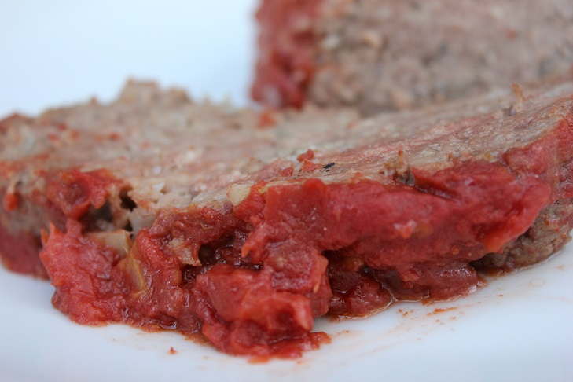

Meatloaf
A hearty classic!

Ingredients
The Loaf:
- 1½ lb ground beef
- 1 egg
- 1 minced onion
- 1 cup milk
- 1 cup crushed crackers
- 1 teaspoon salt
- 2 cloves minced garlic
- 1 teaspoon worchestershire sauce
- ½ teaspoon pepper
The Sauce:
- ½ cup of brown sugar
- ½ cup ketchup
- ½ teaspoon ginger
Instructions:
- Preheat oven to 350 degrees F
- Mix beef, egg, onion, garlic, milk, egg, salt, pepper and worchestireshire sauce in a medium bowl
- Mix brown sugar, ketchup, and ginger in a measuring cup
- Microwave ketchup mixture 15 - 20 seconds
- Form meat mixture into a loaf and place in shallow baking dish or loaf pan
- Cover with ketchup mixture
- Bake at 350 degrees F for approximately 1 hour or until the internal temperature reaches 160 degrees F